Ogni contributo verifica fonti primarie e indica cosa cambia per il destinatario. Mai marketing, mai pareri travestiti.
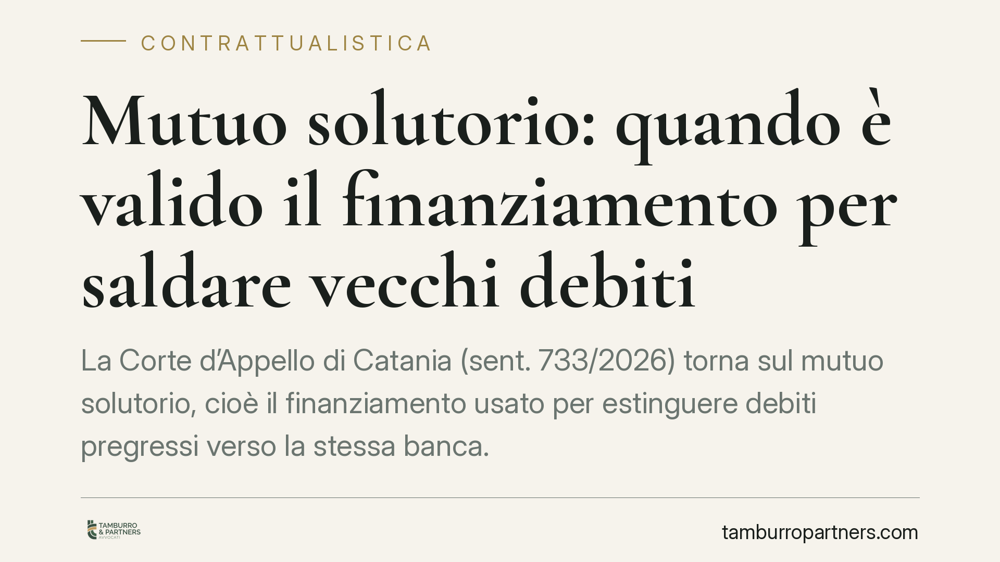
La Corte d'Appello di Catania (sent. 733/2026) torna sul mutuo solutorio, cioè il finanziamento usato per estinguere debiti pregressi verso la stessa banca. L'operazione è valida, …
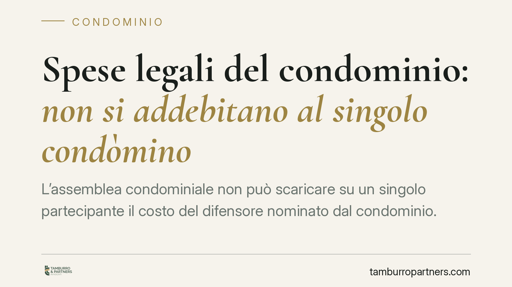
L'assemblea condominiale non può scaricare su un singolo partecipante il costo del difensore nominato dal condominio. In assenza di una condanna giudiziale che individui il soggett…
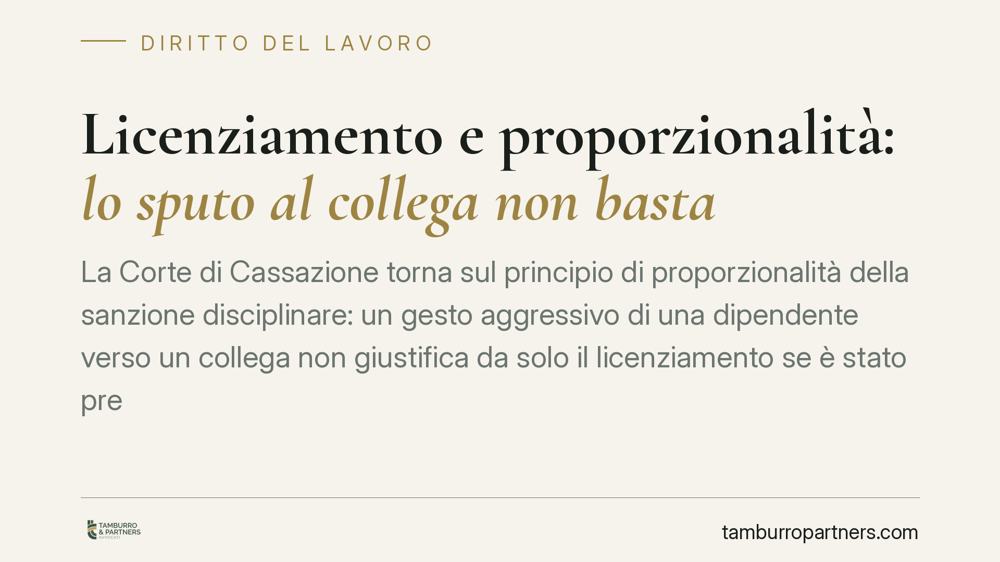
La Corte di Cassazione torna sul principio di proporzionalità della sanzione disciplinare: un gesto aggressivo di una dipendente verso un collega non giustifica da solo il licenzia…
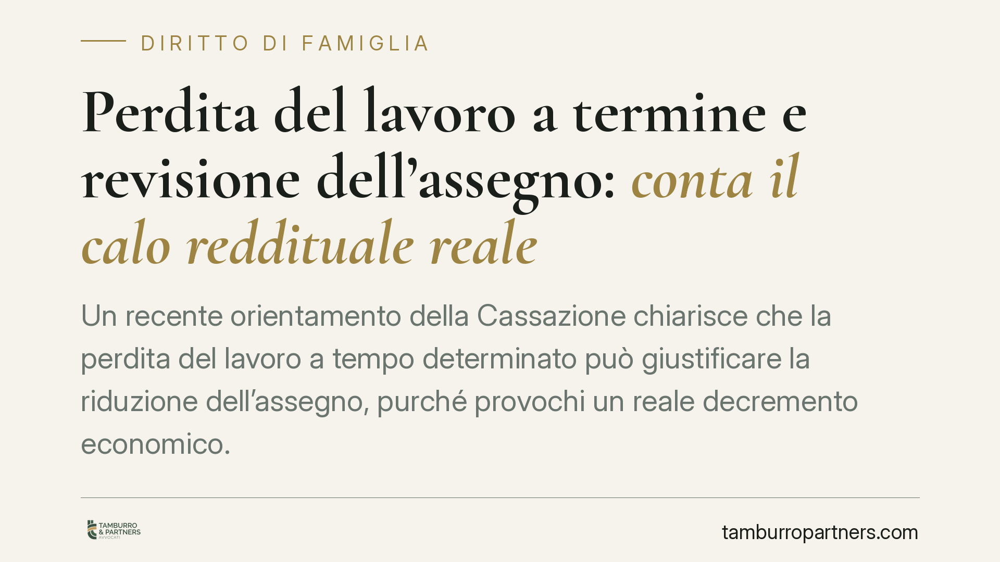
Un recente orientamento della Cassazione chiarisce che la perdita del lavoro a tempo determinato può giustificare la riduzione dell'assegno, purché provochi un reale decremento eco…
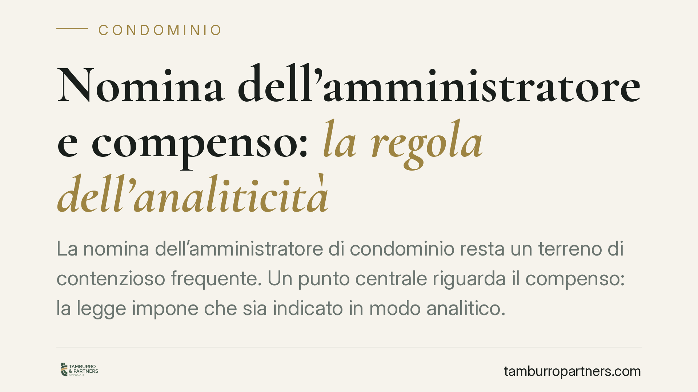
La nomina dell'amministratore di condominio resta un terreno di contenzioso frequente. Un punto centrale riguarda il compenso: la legge impone che sia indicato in modo analitico. V…
Una recente pronuncia di merito torna sul rapporto tra riconciliazione coniugale e assegno di mantenimento. La ripresa della convivenza, provata per comportamenti concludenti ex ar…
L'impiego di sistemi di intelligenza artificiale nella gestione del personale — selezione, assegnazione dei turni, valutazione delle performance — pone problemi concreti di traspar…
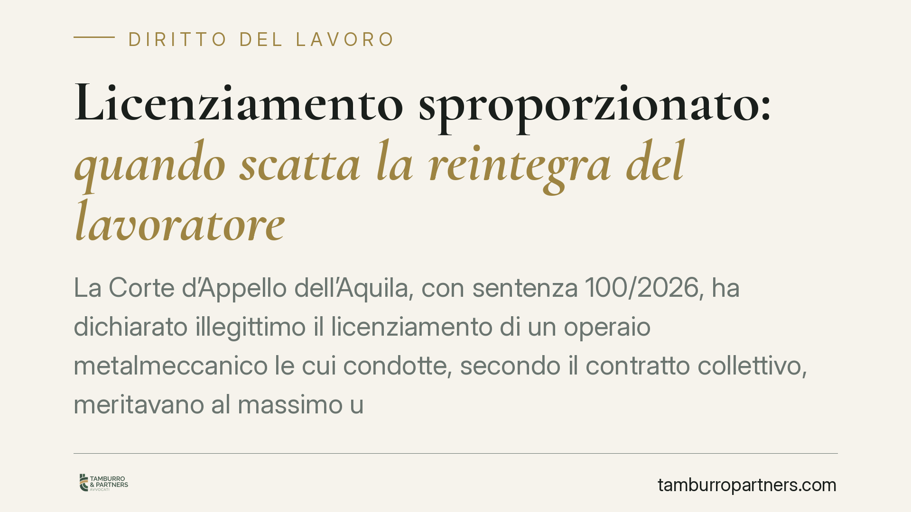
La Corte d'Appello dell'Aquila, con sentenza 100/2026, ha dichiarato illegittimo il licenziamento di un operaio metalmeccanico le cui condotte, secondo il contratto collettivo, mer…
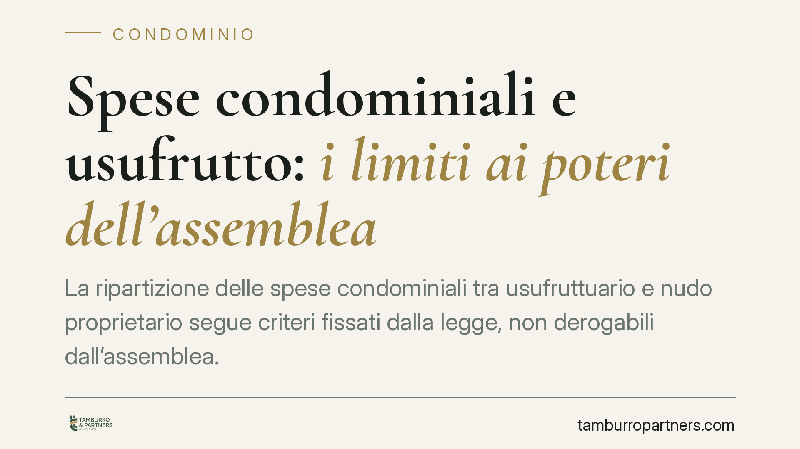
La ripartizione delle spese condominiali tra usufruttuario e nudo proprietario segue criteri fissati dalla legge, non derogabili dall'assemblea. Un tema ricorrente nei contenziosi,…
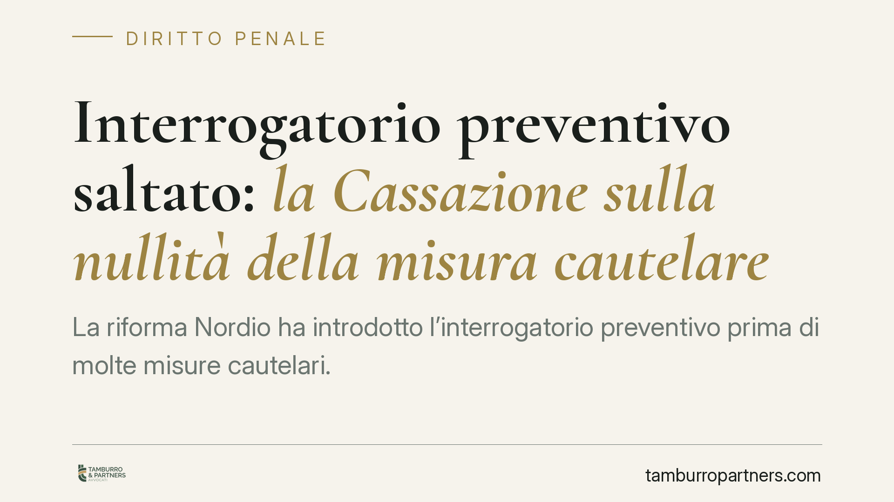
La riforma Nordio ha introdotto l'interrogatorio preventivo prima di molte misure cautelari. Ma cosa accade se il giudice lo omette? Un recente orientamento di legittimità chiarisc…
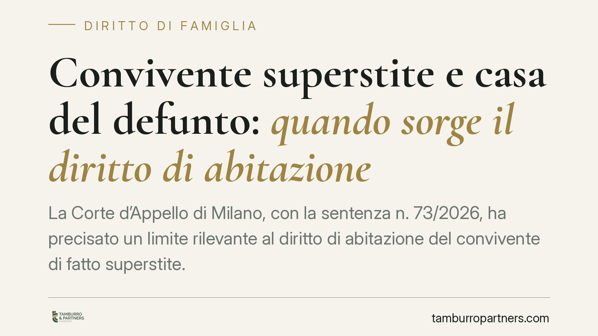
La Corte d'Appello di Milano, con la sentenza n. 73/2026, ha precisato un limite rilevante al diritto di abitazione del convivente di fatto superstite. Il diritto previsto dalla Le…
Nel giudizio di opposizione a decreto ingiuntivo il creditore opposto assume la posizione sostanziale di attore. Entro certi limiti può modificare la propria domanda e chiedere som…
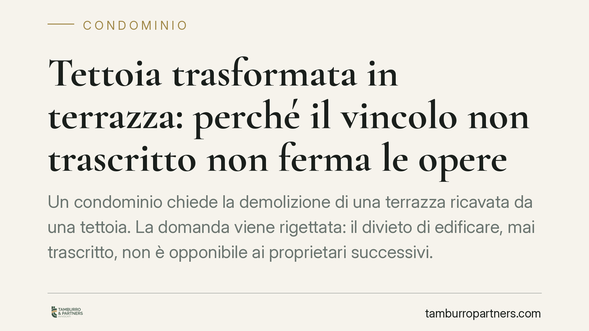
Un condominio chiede la demolizione di una terrazza ricavata da una tettoia. La domanda viene rigettata: il divieto di edificare, mai trascritto, non è opponibile ai proprietari su…
Nelle prestazioni discontinue, come quelle degli autotrasportatori, provare lo straordinario è complesso: i tempi di attesa non sempre valgono come orario di lavoro. Una recente pr…
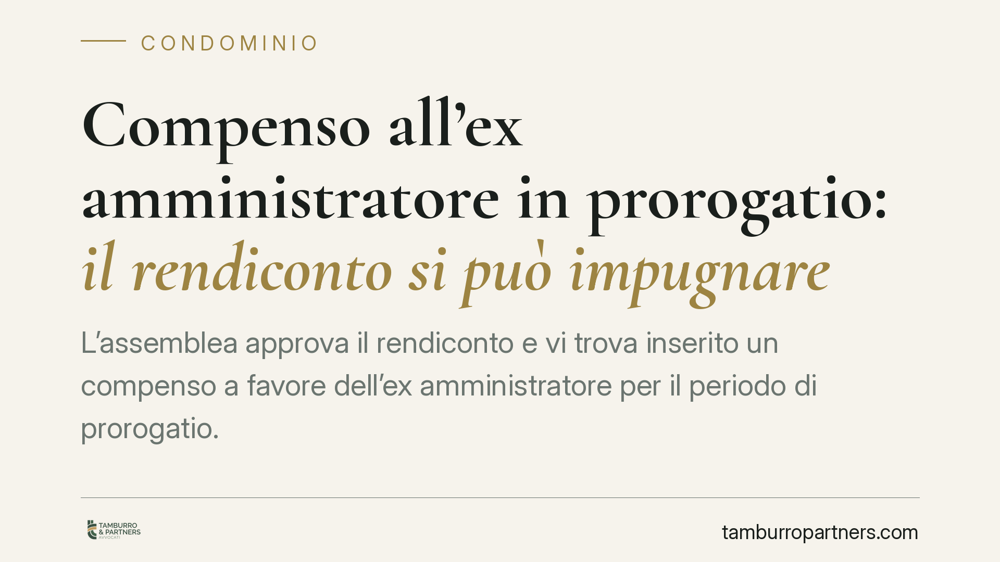
L'assemblea approva il rendiconto e vi trova inserito un compenso a favore dell'ex amministratore per il periodo di prorogatio. Quella posta non è dovuta e altera il contenuto econ…
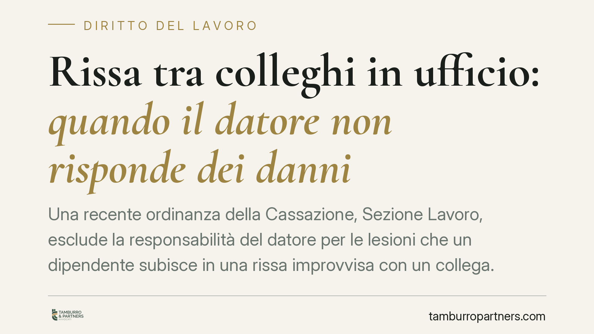
Una recente ordinanza della Cassazione, Sezione Lavoro, esclude la responsabilità del datore per le lesioni che un dipendente subisce in una rissa improvvisa con un collega. L'even…
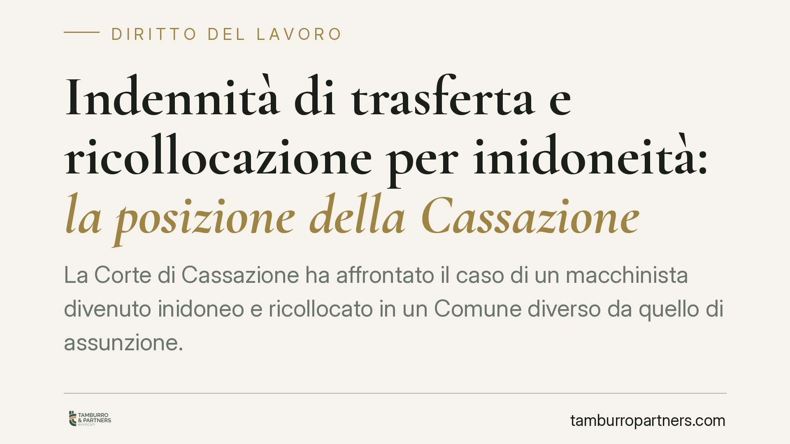
La Corte di Cassazione ha affrontato il caso di un macchinista divenuto inidoneo e ricollocato in un Comune diverso da quello di assunzione. Secondo la Corte, se lo spostamento ris…
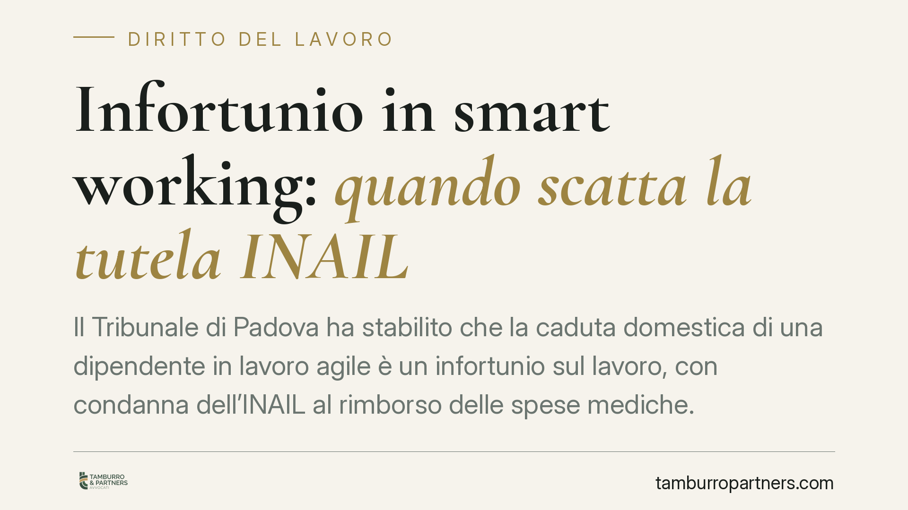
Il Tribunale di Padova ha stabilito che la caduta domestica di una dipendente in lavoro agile è un infortunio sul lavoro, con condanna dell'INAIL al rimborso delle spese mediche. L…
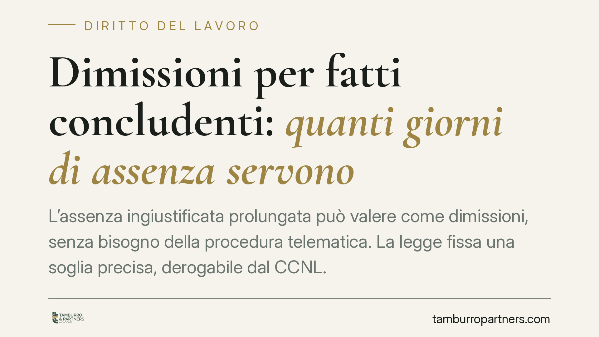
L'assenza ingiustificata prolungata può valere come dimissioni, senza bisogno della procedura telematica. La legge fissa una soglia precisa, derogabile dal CCNL. Capire quando scat…
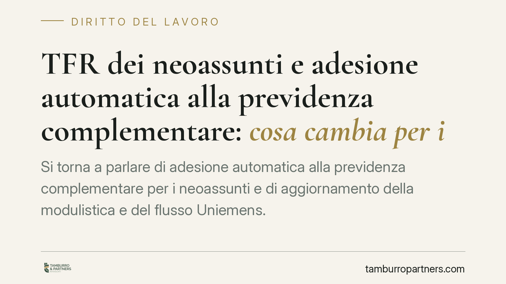
Si torna a parlare di adesione automatica alla previdenza complementare per i neoassunti e di aggiornamento della modulistica e del flusso Uniemens. Alcuni dettagli operativi circo…
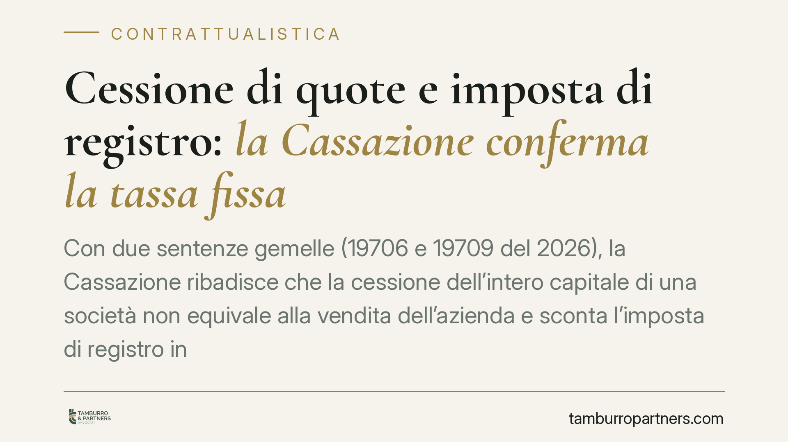
Con due sentenze gemelle (19706 e 19709 del 2026), la Cassazione ribadisce che la cessione dell'intero capitale di una società non equivale alla vendita dell'azienda e sconta l'imp…
Software che analizzano chat ed email per misurare stress ed emozioni dei dipendenti promettono benessere organizzativo. Ma il quadro europeo li colloca tra le pratiche vietate. L'…
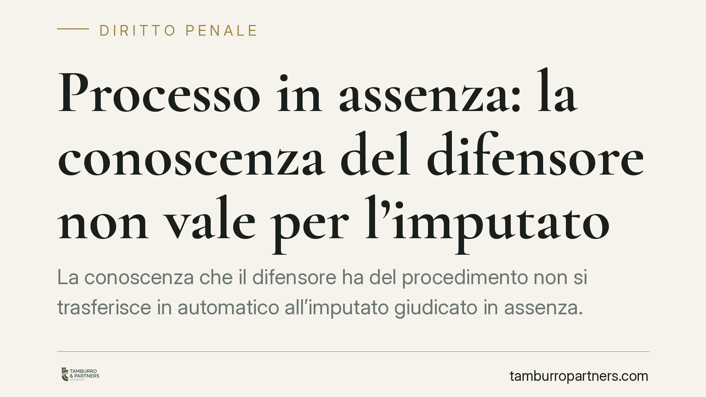
La conoscenza che il difensore ha del procedimento non si trasferisce in automatico all'imputato giudicato in assenza. Per negare i rimedi previsti dal codice, il giudice deve prov…
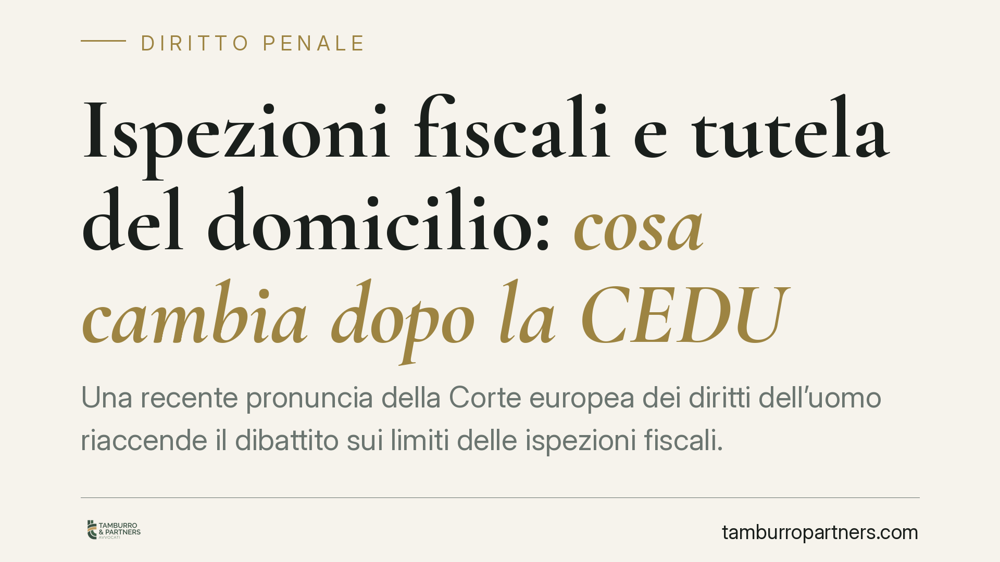
Una recente pronuncia della Corte europea dei diritti dell'uomo riaccende il dibattito sui limiti delle ispezioni fiscali. Sotto esame la tutela del domicilio dell'articolo 8 CEDU:…
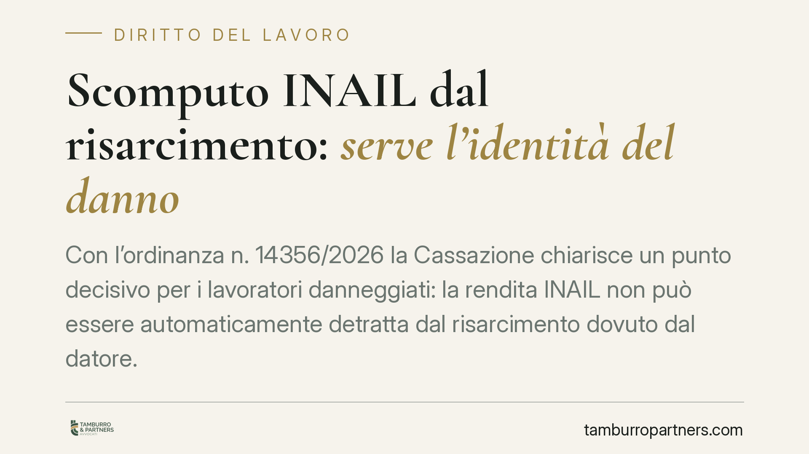
Con l'ordinanza n. 14356/2026 la Cassazione chiarisce un punto decisivo per i lavoratori danneggiati: la rendita INAIL non può essere automaticamente detratta dal risarcimento dovu…
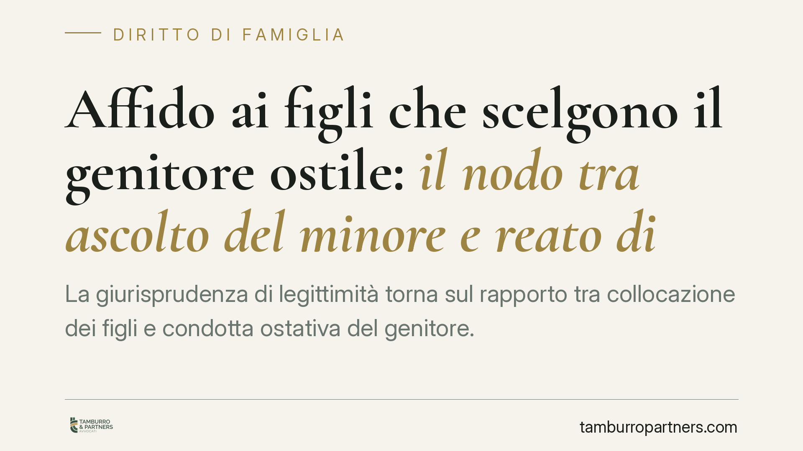
La giurisprudenza di legittimità torna sul rapporto tra collocazione dei figli e condotta ostativa del genitore. Quando i ragazzi, ascoltati dal giudice, esprimono una preferenza n…
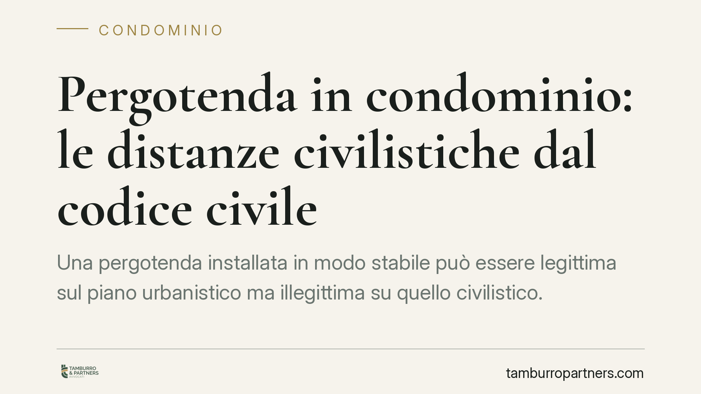
Una pergotenda installata in modo stabile può essere legittima sul piano urbanistico ma illegittima su quello civilistico. Una recente pronuncia del Tribunale di Trani ha ribadito …
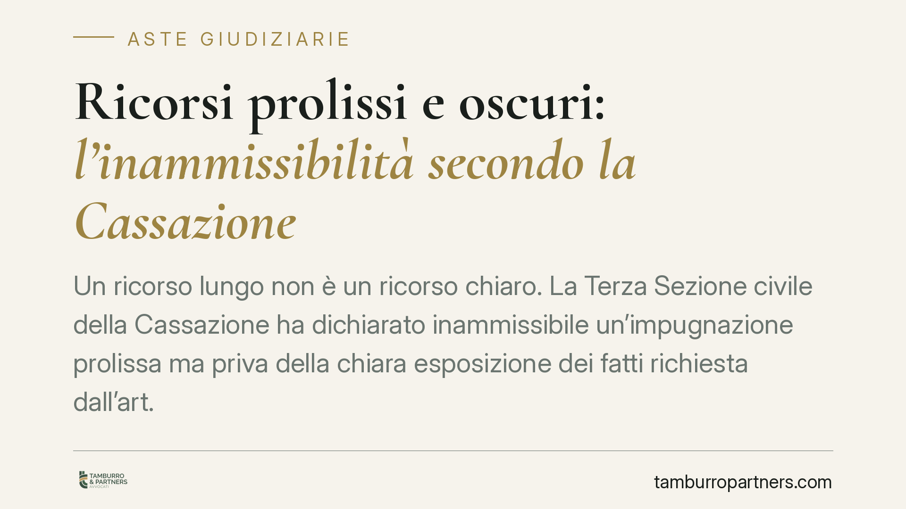
Un ricorso lungo non è un ricorso chiaro. La Terza Sezione civile della Cassazione ha dichiarato inammissibile un'impugnazione prolissa ma priva della chiara esposizione dei fatti …
Quando il defunto lascia crediti da riscuotere, un solo erede può agire senza interpellare gli altri? La risposta non è scontata. Debiti e crediti seguono regole opposte: i primi s…
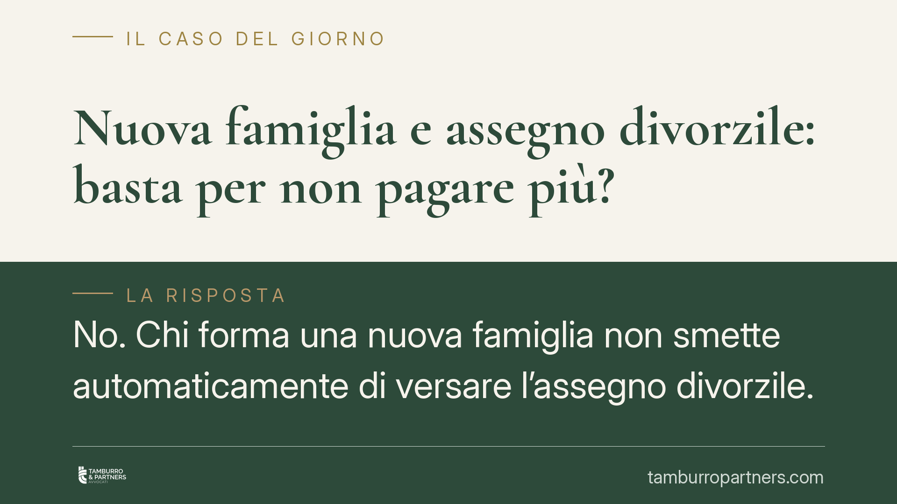
No. Chi forma una nuova famiglia non smette automaticamente di versare l'assegno divorzile. La Cassazione ha ribadito che la revisione richiede la prova di una concreta e stabile m…